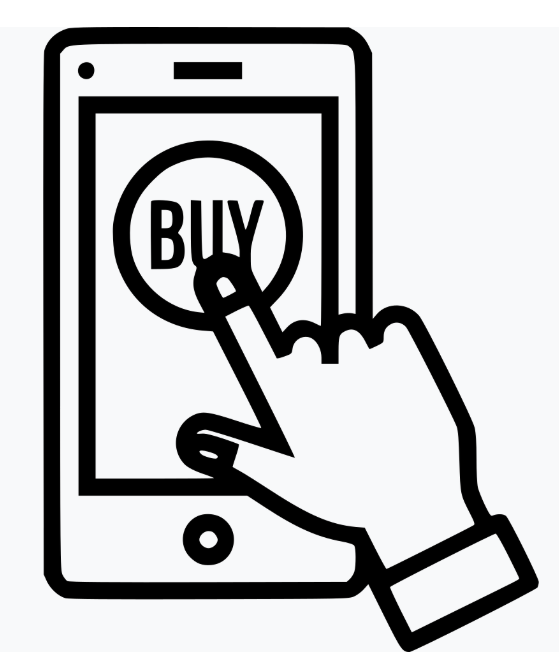

<mat-sidenav-container class="sidenav-container">
  <mat-sidenav #drawer class="sidenav" fixedInViewport [attr.role]="(isHandset$ | async) ? 'dialog' : 'navigation'"
    [mode]="(isHandset$ | async) ? 'over' : 'side'" [opened]="(isHandset$ | async) === false">
    
    <mat-toolbar>Menu</mat-toolbar>
    <mat-nav-list>

      <a mat-list-item routerLink="/nav/DashBoard"><i class="material-icons" >dashboard</i>Dashboard</a>
      <a mat-list-item routerLink="/nav/orders">Order Management</a>
      <a mat-list-item routerLink="/nav/order_delivery">Delivery Management</a>
      <a mat-list-item routerLink='/nav/categories'><i class="material-icons">category</i>Category</a>
      <a mat-list-item routerLink="/nav/productList"><i class="material-icons">shopping_cart</i>Product</a>
      <a mat-list-item routerLink="/nav/supplier">Supplier</a>
      <a mat-list-item routerLink="/nav/purchase">Purchase</a>
      <a mat-list-item routerLink="/nav/users"><i class="material-icons">people_alt</i>User management</a>
      <a mat-list-item routerLink="/nav/blog"><i class="material-icons">post_add</i>Blog</a>
      <!-- <a mat-list-item routerLink='/nav/cart'><i class="material-icons" >shopping_cart</i>Cart</a> -->
      <!-- <a mat-list-item routerLink="/nav/productList"><i class="material-icons" >shopping_cart</i>Product management</a> -->
      <!-- <a mat-list-item routerLink="/nav/MyProfile"><i class="material-icons" >account_circle</i>My Profile</a> -->
      <a mat-list-item routerLink="/nav/EditUserData">Edit Password</a>
      <a mat-list-item (click)="onLogOut()"><i class="material-icons">exit_to_app</i>Log Out</a>
    </mat-nav-list>
  </mat-sidenav>
  <mat-sidenav-content>
    <mat-toolbar color="primary">
      <button type="button" aria-label="Toggle sidenav" mat-icon-button (click)="drawer.toggle()"
        *ngIf="isHandset$ | async">
        <mat-icon aria-label="Side nav toggle icon">menu</mat-icon>
      </button>
      <span>wbns,Welcome {{user_email | uppercase}}</span>

    </mat-toolbar>
    <div>
      <div style="width:220px;height:120px;border:1px solid white ">
        
      </div>
      <hr class="new1">
    </div>
    <router-outlet> </router-outlet>
  </mat-sidenav-content>
</mat-sidenav-container>
